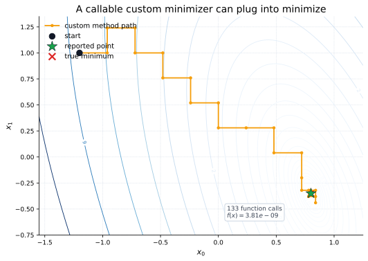
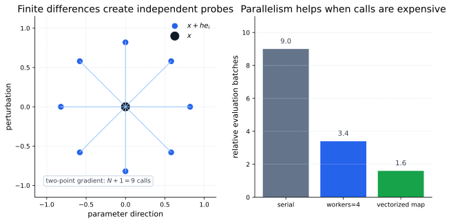

Custom Minimizers
minimize normally receives a method name such as
"BFGS" or "SLSQP". It can also receive a
callable method. That callable accepts the objective, starting point,
arguments, and options, then returns an OptimizeResult:
This is useful when wrapping a domain-specific solver, experimenting
with a research method, or using a custom method inside another SciPy
optimizer such as basinhopping.

minimize. It is intentionally simple, but it shows
the interface contract: produce a result object and preserve the
same objective-calling convention.
Parallel Execution Support
Some SciPy optimizers accept a workers keyword. For
population methods such as differential_evolution, a
generation contains many independent candidates. For local
minimizers, numerical differentiation can also create independent
perturbation evaluations:
A two-point finite-difference gradient in \(N\) variables needs \(N+1\) objective evaluations. If those calls are expensive and independent, a map-like worker can evaluate several of them at once.

Using SciPy
A custom minimizer should accept unknown keyword options so it remains compatible with SciPy wrappers. For parallel execution, prefer a reusable map-like callable when process startup overhead matters.
import numpy as np
from multiprocessing import Pool
from scipy.optimize import OptimizeResult, differential_evolution, minimize, rosen
def custmin(fun, x0, args=(), stepsize=0.1, maxiter=100, callback=None, **options):
bestx = np.array(x0, dtype=float)
besty = fun(bestx, *args)
nfev = 1
for _ in range(maxiter):
improved = False
for dim in range(bestx.size):
for sign in (-1, 1):
trial = bestx.copy()
trial[dim] += sign * stepsize
value = fun(trial, *args)
nfev += 1
if value < besty:
bestx, besty = trial, value
improved = True
if callback is not None:
callback(bestx)
if not improved:
break
return OptimizeResult(x=bestx, fun=besty, success=True, nfev=nfev)
custom = minimize(rosen, x0=np.array([1.3, 0.7, 0.8]), method=custmin)
bounds = [(0.0, 10.0), (0.0, 10.0), (0.0, 10.0)]
with Pool(2) as pool:
de = differential_evolution(rosen, bounds, workers=pool.map, updating="deferred")When To Use It
| Feature | Use when | Watch for |
|---|---|---|
| Custom method | You need to wrap a solver, prototype a method, or integrate with a SciPy meta-optimizer. | Return a complete OptimizeResult and accept extra options. |
workers=int |
You want SciPy to create a process pool for independent evaluations. | The objective must be pickleable; lambdas and closures often fail. |
| Map-like workers | You want to reuse a pool, use MPI, or vectorize batches of candidate evaluations. | Performance improves only when objective calls dominate overhead. |